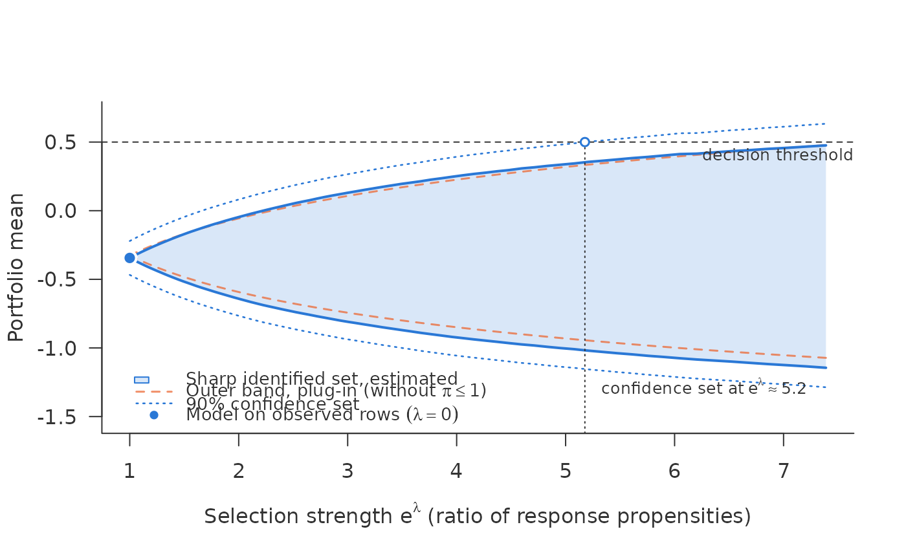

Debiased scan for the mean of a non-binary outcome, with a confidence set
Source:R/scan_mean_ci.R
sharp_scan_mean_ci.Rdsharp_scan_mean_ci() estimates the sharp identified set of
sharp_scan_mean() – the mean of an outcome that may be missing not at
random, when the ratio of the response propensities of any two outcome
values is at most \(e^\lambda\) – with a debiased estimator and a
confidence set. It is the counterpart of sharp_scan_ci() for an outcome
that is not binary.
Arguments
- q
An \(n \times K\) matrix of conditional quantiles of \(Y\) given \(R = 1, X = x_i\) for every row, fitted out of fold, at the levels \((k - 1/2)/K\).
- r
Cross-fitted \(\hat r(x_i)\) for every row, in (0, 1].
- response
Response indicator for every row, 0/1 or logical.
- outcome
Outcome; ignored (and may be
NA) whereresponseis 0.- target
"all"(default),"unobserved"(the mean of the missing outcomes, \(E(Y \mid R = 0)\)), or a logical vector selecting the rows of the portfolio by \(X\).- lambda
Grid of \(\lambda\) values.
- weights
Optional non-negative row weights, a function of \(X\).
- threshold
Optional value of the mean at which the decision changes.
- level
Confidence level. Default 0.9.
- trim
Rows with \(\hat r <\)
trimleave the target. Default 0.- r_bounds
\(\hat r\) is clipped into this range before use. Default
c(0.01, 0.99). The number of clipped target rows is reported, below and above apart: clipping at the top only stabilises the cap \(\pi \le 1\) for rows that are almost always observed, clipping at the bottom limits inverse weights.- segment
Optional logical vector chosen by \(X\), one per row, that restricts a target of
"unobserved"(or"all") to one segment, as insharp_scan_ci().
Value
An object of class
c("sharp_scan_mean_ci", "sharp_scan_ci", "sharp_scan_mean", "sharp_scan") with curve (columns lambda, lower, upper,
se_lower, se_upper, ci_lower, ci_upper, naive_lower,
naive_upper; the naive columns are the plug-in outer band), point
(the estimate at \(\lambda = 0\)), flip (sharp, ci, naive),
trimmed, clipped (rows entering the set, that is all rows of the
segment for "unobserved"), capped (the weighted share of the rows
entering the set in which the cap \(\pi \le 1\) binds at the largest \(\lambda\), per
bound), tail, n and n_target. Estimates and confidence set are kept
monotone in \(\lambda\), as in sharp_scan_ci(). as.data.frame(x, lambda = ) gives the plug-in bounds per row, with \(\hat r\) clipped
into r_bounds; they carry no correction and no confidence statement.
The estimator
Each endpoint of the set is a mean over rows of \(\mu^\pm(x)\), which
depends on \(r(x)\) and on the quantile function of \(Y\) given
\(R = 1, X = x\). The plug-in, sharp_scan_mean(), inherits the
first-order error of both estimates; in simulations it was typically biased
towards the inside of the set. The estimator here adds to each row a correction term that
removes that first-order error: an inverse-probability weighted residual
of the observed outcome, and, where the constraint \(\pi \le 1\) binds,
a term in \(R - \hat r\). The resulting score is Neyman-orthogonal in
both regimes, so the estimate is insensitive to small errors in the
nuisances, and the correction in \(r\) vanishes continuously where the
regime changes (on the grid of quantile levels below: up to an error of
order \(1/K\)), so no margin condition is needed. The confidence set is
the Wald interval from the empirical standard deviation of the score.
The quantiles enter as a grid of \(K\) levels \((k - 1/2)/K\), as in
sharp_scan_mean(). An estimator that uses the full empirical
distribution of residuals instead differs from this one by
\(O(1/K)\).
What is covered
At each \(\lambda\) separately, the interval
\([\hat\psi^- - z\,\widehat{se}^-,\ \hat\psi^+ + z\,\widehat{se}^+]\)
covers the identified set \([\psi^-, \psi^+]\) with probability at
least level asymptotically. It is a confidence set for the set, not for
the mean inside it, and it holds pointwise in \(\lambda\). The theory
requires overlap, \(r(x)\) bounded away from 0 and 1, which is why
\(\hat r\) is kept inside r_bounds; a density of \(Y\) given
\(R = 1, X = x\) that is bounded below on an inner range of quantiles;
no point mass at the optimum, so that \(s^*\) lies strictly inside
\((0, 1)\) (for a flat grid the code takes \(s^* = 0\)); a bounded
conditional second moment of \(Y\); a non-degenerate score variance;
and nuisance estimates whose errors
vanish faster than \(n^{-1/4}\), cross-fitted as by
crossfit_quantiles().
In the package's own simulation (simulate_shadow(outcome = "continuous", tilt = -1), learners as in the example below with smooth scale, K = 200,
five folds, level = 0.9), the interval covered the whole identified set
in 88.7%, 91.1% and 92.7% of 1000 samples of 5000 rows at
\(\lambda\) = 0.5, 1 and 2, and in 87.3%, 89.0% and 91.0% of 300 samples
of 2000 rows.
The learner matters for width, not for validity alone. A smooth location
and scale model for \(Y\) given \(X\), such as mgcv::gaulss(), with
the quantiles of the standardised residuals, is a good default. In
simulations, a linear model for the location only, which cannot follow
heteroskedasticity, made the set markedly too wide, and quantile forests
gave valid but conservative sets.
The target is the mean over all rows (target = "all"), over a segment
chosen by \(X\) (a logical vector), or the mean of the missing outcomes,
\(E(Y \mid R = 0)\) (target = "unobserved", within a segment if
given). For the last, \(E(Y \mid R = 0) = \{E(Y) - E(RY)\}/\mathrm{pr}(R
= 0)\), so the sharp set is \(\theta^\pm = \{\psi^\pm -
E(RY)\}/\mathrm{pr}(R = 0)\) with \(\psi^\pm\) the endpoints for all rows,
estimated with sample means in place of the expectations; the influence
function is \(\{\varphi^\pm - RY - \theta^\pm(1 - R)\}/\mathrm{pr}(R =
0)\), and the standard error the sample standard deviation of its
estimate, under the same conditions as above (Bücker 2026, corollary on
the mean of the nonrespondents). It is not the mean of \(E(Y \mid X =
x)\) over the unobserved rows. In the package's simulation (as above, five
folds, 200 samples each of 2,000 and 5,000 rows, \(\lambda\) from 0 to 2),
the interval covered the set for \(E(Y \mid R = 0)\) in 89.5% to 92.5%
of samples, and the standard error matched the spread of the estimates
to within 6%.
References
Bücker, M. (2026). Sharp intervals for a mean under bounded selection ratios when the response rate is known. Manuscript.
Examples
d <- simulate_shadow(1000, tilt = -1, outcome = "continuous", seed = 4)
xs <- c("x1", "x2", "z_shadow", "z_policy", "z_score")
fit_r <- function(train, newdata)
predict(glm(reformulate(xs, "observed"), binomial, train), newdata,
type = "response")
if (requireNamespace("mgcv", quietly = TRUE)) {
# location smooth in every covariate, scale linear; quantiles from the
# standardised residuals
sm <- paste0("s(", xs, ")")
fit_q <- function(train, newdata, tau) {
m <- mgcv::gam(list(reformulate(sm, "y"), reformulate(xs)),
family = mgcv::gaulss(), data = train)
p_tr <- predict(m, train, type = "response")
p_new <- predict(m, newdata, type = "response")
e <- (train$y - p_tr[, 1]) * p_tr[, 2]
outer(p_new[, 1], rep(1, length(tau))) +
outer(1 / p_new[, 2], quantile(e, tau, names = FALSE))
}
cf <- crossfit_quantiles(d, "observed", fit_q, fit_r, K = 100, folds = 3,
seed = 1)
k <- sharp_scan_mean_ci(cf$q, cf$r, d$observed, d$y, threshold = 0.5)
print(k)
plot(k)
}
#> <sharp_scan_mean_ci> sharp set for a mean, debiased, with 90% confidence set
#> rows: 1000 target: all (1000 rows)
#> r-hat < 0.01: 0 target rows, 0 observed rows; smallest r-hat observed 0.099
#> lambda = 0: -0.344 [-0.468, -0.221]
#> lambda = 2 (propensity ratio 7.39): set [-1.14, 0.476], confidence set [-1.29, 0.634]
#> threshold 0.5 reached by
#> estimated set: not within the scanned range
#> confidence set: lambda = 1.64 (propensity ratio 5.18)
#> outer band (plug-in): not within the scanned range
#> cap pi <= 1 at lambda = 2 binds in 47% of the rows entering the set
#> for the lower bound, 42% for the upper
